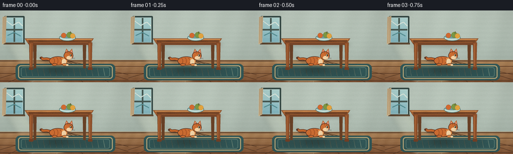
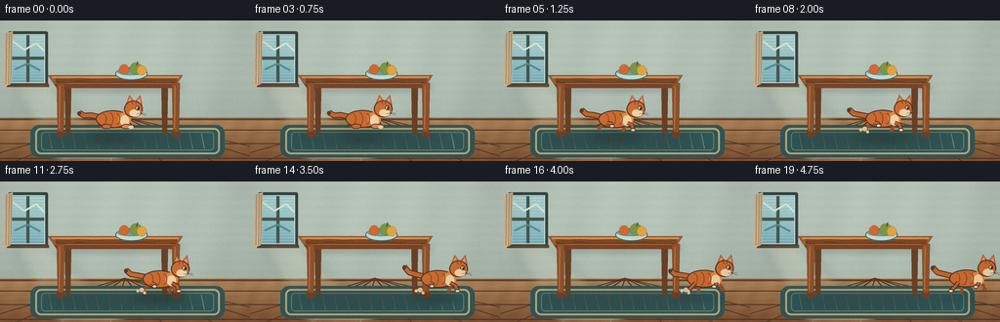
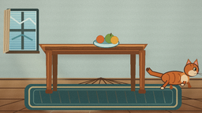
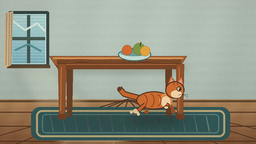
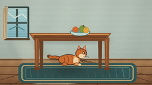
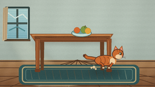
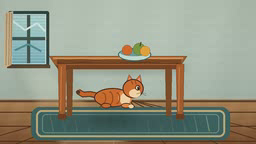

CODING AGENTS AS PIXEL WORLD MODELS
traex/DeepSeek-V4.1-Flash · dynamic_spatial_relationship_0016
点击播放 · 原生 RGB 像素
逐轮保存的候选
回放视频、检查图与代码变化。
每份候选均可单独播放。实际图片检查记录在下方工具轨迹中。
候选 01播放与检查图
点击播放 · 原生 RGB 像素


展开代码变化
--- 上一保存版本
+++ 本次保存版本
@@ -0,0 +1,359 @@
+from __future__ import annotations
+
+import math
+from pathlib import Path
+
+import cv2
+import numpy as np
+from PIL import Image, ImageDraw, ImageFilter
+
+import artifact_io
+
+
+WIDTH = 256
+HEIGHT = 144
+FRAMES = 20
+FPS = 4.0
+SS = 4
+
+
+def box(x0: float, y0: float, x1: float, y1: float) -> tuple[int, int, int, int]:
+ return tuple(round(v * SS) for v in (x0, y0, x1, y1))
+
+
+def pts(values: list[tuple[float, float]]) -> list[tuple[int, int]]:
+ return [(round(x * SS), round(y * SS)) for x, y in values]
+
+
+def mix(a: tuple[int, int, int], b: tuple[int, int, int], t: float) -> tuple[int, int, int]:
+ return tuple(round(a[i] * (1.0 - t) + b[i] * t) for i in range(3))
+
+
+def make_background() -> Image.Image:
+ yy, xx = np.mgrid[0 : HEIGHT * SS, 0 : WIDTH * SS]
+ yn = yy / (HEIGHT * SS - 1)
+ xn = xx / (WIDTH * SS - 1)
+
+ wall_top = np.array([194, 207, 195], dtype=float)
+ wall_bottom = np.array([171, 185, 174], dtype=float)
+ blend = np.clip(yn / 0.72, 0, 1)[..., None]
+ wall = wall_top * (1 - blend) + wall_bottom * blend
+ wall += 2.2 * np.sin(xn * 31.0 + yn * 4.0)[..., None]
+ wall += 1.2 * np.sin(yn * 95.0)[..., None]
+
+ floor_top = np.array([181, 139, 94], dtype=float)
+ floor_bottom = np.array([135, 88, 56], dtype=float)
+ floor_t = np.clip((yn - 0.69) / 0.31, 0, 1)[..., None]
+ floor = floor_top * (1 - floor_t) + floor_bottom * floor_t
+ floor += 3.0 * np.sin(xn * 75.0 + yn * 20.0)[..., None]
+ floor += 2.0 * np.sin(yn * 130.0 + xn * 12.0)[..., None]
+
+ arr = np.where((yn > 0.69)[..., None], floor, wall)
+ return Image.fromarray(np.clip(arr, 0, 255).astype(np.uint8), "RGB").convert("RGBA")
+
+
+def draw_window(draw: ImageDraw.ImageDraw) -> None:
+ # A cool, luminous window balances the warm wood and orange cat.
+ draw.rounded_rectangle(box(8, 11, 49, 67), radius=2 * SS, fill=(54, 74, 70, 255))
+ draw.rectangle(box(11, 14, 46, 64), fill=(207, 228, 220, 255))
+ draw.rectangle(box(12, 15, 45, 63), fill=(156, 204, 207, 255))
+
+ for y in range(16, 63, 3):
+ t = (y - 16) / 47
+ color = mix((190, 224, 218), (123, 176, 188), t)
+ draw.rectangle(box(12, y, 45, y + 2), fill=color + (255,))
+
+ draw.rectangle(box(27, 15, 30, 63), fill=(73, 91, 84, 255))
+ draw.rectangle(box(12, 37, 45, 40), fill=(73, 91, 84, 255))
+ draw.line(pts([(13, 21), (25, 30), (37, 23), (45, 31)]), fill=(225, 239, 229, 180), width=2 * SS)
+ draw.line(pts([(15, 50), (28, 44), (41, 51)]), fill=(89, 147, 151, 130), width=2 * SS)
+ draw.rectangle(box(7, 65, 50, 68), fill=(94, 70, 48, 255))
+
+ # Curtain folds at the left edge of the window.
+ curtain = [(5, 13), (13, 11), (11, 65), (4, 68)]
+ draw.polygon(pts(curtain), fill=(213, 188, 147, 255))
+ for x in (6.5, 9.2, 11.5):
+ draw.line(pts([(x, 13), (x - 0.7, 65)]), fill=(177, 148, 111, 150), width=1 * SS)
+
+
+def draw_room(img: Image.Image) -> None:
+ draw = ImageDraw.Draw(img, "RGBA")
+ draw_window(draw)
+
+ # Floor boards radiate gently toward a central vanishing point.
+ draw.line(pts([(0, 101), (256, 101)]), fill=(100, 72, 51, 100), width=2 * SS)
+ for x in (-30, 16, 63, 113, 165, 218, 272, 322):
+ draw.line(pts([(128, 99), (x, 144)]), fill=(91, 59, 38, 45), width=1 * SS)
+ for y in (112, 126, 141):
+ draw.line(pts([(0, y), (256, y)]), fill=(90, 56, 35, 35), width=1 * SS)
+
+ # Soft window light falling across the floor.
+ light = Image.new("RGBA", img.size, (0, 0, 0, 0))
+ ld = ImageDraw.Draw(light, "RGBA")
+ ld.polygon(pts([(13, 66), (48, 64), (132, 144), (57, 144)]), fill=(255, 241, 185, 36))
+ ld.polygon(pts([(18, 67), (39, 66), (91, 144), (58, 144)]), fill=(255, 249, 213, 28))
+ light = light.filter(ImageFilter.GaussianBlur(5 * SS))
+ img.alpha_composite(light)
+
+ # Woven rug.
+ draw = ImageDraw.Draw(img, "RGBA")
+ draw.rounded_rectangle(box(31, 107, 230, 140), radius=9 * SS, fill=(52, 91, 91, 255))
+ draw.rounded_rectangle(box(36, 110, 225, 137), radius=6 * SS, outline=(192, 174, 126, 255), width=2 * SS)
+ draw.rounded_rectangle(box(42, 114, 219, 133), radius=4 * SS, outline=(105, 139, 127, 180), width=1 * SS)
+ for x in range(50, 218, 12):
+ draw.line(pts([(x, 116), (x + 3, 131)]), fill=(121, 146, 129, 45), width=1 * SS)
+
+
+def soft_ellipse(
+ img: Image.Image,
+ bounds: tuple[float, float, float, float],
+ fill: tuple[int, int, int, int],
+ blur: float,
+) -> None:
+ layer = Image.new("RGBA", img.size, (0, 0, 0, 0))
+ ImageDraw.Draw(layer, "RGBA").ellipse(box(*bounds), fill=fill)
+ img.alpha_composite(layer.filter(ImageFilter.GaussianBlur(blur * SS)))
+
+
+def draw_table(img: Image.Image) -> None:
+ draw = ImageDraw.Draw(img, "RGBA")
+
+ soft_ellipse(img, (42, 111, 201, 128), (50, 39, 31, 62), 7)
+ soft_ellipse(img, (59, 64, 188, 73), (61, 41, 25, 50), 3)
+
+ # Back legs are a little cooler and darker.
+ draw.polygon(pts([(66, 62), (73, 62), (72, 116), (67, 116)]), fill=(105, 65, 38, 255))
+ draw.polygon(pts([(165, 62), (172, 62), (171, 116), (166, 116)]), fill=(105, 65, 38, 255))
+
+ # Table top with a narrow front edge and restrained grain.
+ top = [(49, 56), (187, 56), (181, 65), (55, 65)]
+ draw.polygon(pts(top), fill=(159, 94, 51, 255), outline=(91, 54, 34, 255))
+ draw.polygon(pts([(55, 65), (181, 65), (178, 69), (58, 69)]), fill=(119, 69, 40, 255))
+ draw.line(pts([(53, 58), (183, 58)]), fill=(209, 143, 82, 210), width=2 * SS)
+ draw.line(pts([(57, 63), (179, 63)]), fill=(109, 62, 35, 130), width=1 * SS)
+ for y, alpha in ((59.5, 75), (61.0, 55), (62.3, 65)):
+ draw.line(
+ pts([(57, y), (69, y + 0.6), (81, y - 0.2), (96, y + 0.7), (111, y + 0.1),
+ (128, y + 0.5), (146, y - 0.3), (164, y + 0.6), (181, y + 0.1)]),
+ fill=(87, 52, 31, alpha),
+ width=1 * SS,
+ )
+
+ # Front legs and small feet.
+ for x0 in (58, 176):
+ draw.polygon(
+ pts([(x0, 64), (x0 + 8, 64), (x0 + 7, 116), (x0 + 1, 116)]),
+ fill=(145, 82, 44, 255),
+ outline=(91, 52, 31, 255),
+ )
+ draw.line(pts([(x0 + 3, 67), (x0 + 2.5, 111)]), fill=(190, 116, 64, 140), width=1 * SS)
+ draw.rounded_rectangle(box(x0 - 0.5, 114, x0 + 8.5, 119), radius=1.5 * SS, fill=(116, 65, 38, 255))
+
+ # A shallow fruit bowl makes the tabletop read immediately.
+ draw.ellipse(box(118, 48, 151, 61), fill=(194, 218, 208, 255), outline=(70, 107, 105, 255), width=1 * SS)
+ draw.ellipse(box(120, 49, 149, 56), fill=(112, 156, 153, 255))
+ draw.ellipse(box(122, 45, 132, 55), fill=(211, 106, 49, 255), outline=(133, 63, 33, 255))
+ draw.ellipse(box(133, 43, 145, 55), fill=(124, 152, 68, 255), outline=(74, 96, 44, 255))
+ draw.ellipse(box(140, 46, 150, 56), fill=(226, 164, 63, 255), outline=(146, 94, 38, 255))
+ draw.line(pts([(140, 46), (141, 42)]), fill=(79, 58, 34, 255), width=1 * SS)
+
+
+def draw_tail(draw: ImageDraw.ImageDraw, cx: float, cy: float, swing: float, moving: float) -> None:
+ lift = 6.5 + 2.0 * swing + moving * 4.0
+ curve = [
+ (cx - 14, cy - 2),
+ (cx - 23, cy - 4 - 0.4 * swing),
+ (cx - 30, cy - lift * 0.52),
+ (cx - 35, cy - lift),
+ ]
+ draw.line(pts(curve), fill=(91, 54, 35, 255), width=6 * SS, joint="curve")
+ draw.line(pts(curve), fill=(198, 103, 45, 255), width=4 * SS, joint="curve")
+ draw.ellipse(box(cx - 37, cy - lift - 1.5, cx - 33, cy - lift + 2.5), fill=(96, 57, 38, 255))
+
+
+def leg_points(
+ root: tuple[float, float],
+ phase: float,
+ reach: float,
+ lift_amount: float,
+) -> tuple[list[tuple[float, float]], tuple[float, float]]:
+ stride = reach * math.sin(phase)
+ lift = max(0.0, math.cos(phase)) * lift_amount
+ paw = (root[0] + stride, 112.0 - lift)
+ knee = (root[0] + stride * 0.55 + 1.5, 106.8 - lift * 0.35)
+ return [root, knee, paw], paw
+
+
+def draw_cat(img: Image.Image, frame_index: int) -> None:
+ if frame_index <= 4:
+ u = 0.0
+ run_amount = 0.0
+ cx = 116.0 + 0.35 * math.sin(frame_index * math.pi / 2)
+ cy = 101.0 + 0.25 * math.sin(frame_index * math.pi / 2)
+ phase = frame_index * 0.65
+ else:
+ u = (frame_index - 4) / 15.0
+ eased = 0.18 * u + 0.82 * (u * u * (3.0 - 2.0 * u))
+ cx = 116.0 + 106.0 * eased
+ run_amount = min(1.0, (frame_index - 3) / 4.0)
+ phase = (frame_index - 4) * 2.05
+ bob = abs(math.sin(phase * 1.5)) * 2.1 * run_amount
+ cy = 101.0 - bob
+
+ moving = 1.0 if frame_index >= 5 else 0.0
+ ground_y = 115.0
+ shadow_width = 24.0 + moving * 3.0
+ soft_ellipse(
+ img,
+ (cx - shadow_width, ground_y, cx + shadow_width, ground_y + 8),
+ (37, 29, 24, 66 if frame_index < 15 else 48),
+ 5,
+ )
+
+ draw = ImageDraw.Draw(img, "RGBA")
+ head_cx = cx + 20.5
+ head_cy = cy - 10.5
+ tail_swing = math.sin(phase * 0.7) * run_amount
+ draw_tail(draw, cx, cy, tail_swing, run_amount)
+
+ orange = (204, 109, 50, 255)
+ orange_light = (225, 139, 70, 255)
+ orange_dark = (151, 73, 34, 255)
+ cream = (242, 211, 166, 255)
+ ink = (75, 47, 36, 255)
+
+ # Far-side legs are drawn first so the body naturally occludes their tops.
+ if moving:
+ far_color = (160, 78, 36, 255)
+ for root, p, reach, lift in (
+ ((cx - 10, cy + 4), phase + math.pi, 8.0, 4.4),
+ ((cx + 12, cy + 4), phase + math.pi * 0.55, 7.0, 4.0),
+ ):
+ points, paw = leg_points(root, p, reach, lift)
+ draw.line(pts(points), fill=far_color, width=3 * SS, joint="curve")
+ draw.ellipse(box(paw[0] - 2.1, paw[1] - 1.5, paw[0] + 2.1, paw[1] + 1.6), fill=far_color)
+ else:
+ draw.ellipse(box(cx - 13, cy + 5, cx - 4, cy + 10), fill=(164, 81, 37, 255))
+ draw.ellipse(box(cx + 8, cy + 5, cx + 17, cy + 10), fill=(164, 81, 37, 255))
+
+ # Torso, chest, neck and head.
+ draw.ellipse(box(cx - 18, cy - 9, cx + 17, cy + 9), fill=orange, outline=ink, width=1 * SS)
+ draw.ellipse(box(cx + 5, cy - 7, cx + 18, cy + 7), fill=orange_light)
+ draw.ellipse(box(cx + 7, cy - 4, cx + 16, cy + 7), fill=cream)
+ draw.polygon(
+ pts([(cx + 12, cy - 7), (cx + 17, cy - 15), (cx + 21, cy - 7)]),
+ fill=orange_light,
+ outline=ink,
+ )
+
+ # Head silhouette and ears.
+ draw.polygon(
+ pts([(head_cx - 7.5, head_cy - 5), (head_cx - 4.0, head_cy - 14), (head_cx + 1.0, head_cy - 7.5)]),
+ fill=orange,
+ outline=ink,
+ )
+ draw.polygon(
+ pts([(head_cx + 1.5, head_cy - 7.5), (head_cx + 7.0, head_cy - 14), (head_cx + 9.0, head_cy - 3.5)]),
+ fill=orange,
+ outline=ink,
+ )
+ draw.polygon(
+ pts([(head_cx - 5.3, head_cy - 6.5), (head_cx - 3.7, head_cy - 11.2), (head_cx - 1.0, head_cy - 7.5)]),
+ fill=(230, 151, 132, 255),
+ )
+ draw.polygon(
+ pts([(head_cx + 3.1, head_cy - 7.2), (head_cx + 6.5, head_cy - 11.0), (head_cx + 7.4, head_cy - 5.1)]),
+ fill=(230, 151, 132, 255),
+ )
+ draw.ellipse(box(head_cx - 9.5, head_cy - 8.5, head_cx + 9.5, head_cy + 8.8), fill=orange, outline=ink, width=1 * SS)
+ draw.ellipse(box(head_cx - 4, head_cy + 0.5, head_cx + 7, head_cy + 8), fill=cream)
+
+ # Tabby stripes.
+ for x_off, height in ((-10, 5.5), (-3, 6.5), (4, 5.5)):
+ draw.arc(box(cx + x_off - 3, cy - height, cx + x_off + 3, cy + height), 255, 105, fill=orange_dark, width=1 * SS)
+ draw.line(pts([(head_cx - 2, head_cy - 8), (head_cx - 0.5, head_cy - 4.5)]), fill=orange_dark, width=1 * SS)
+ draw.line(pts([(head_cx + 2, head_cy - 8), (head_cx + 2.7, head_cy - 4.5)]), fill=orange_dark, width=1 * SS)
+
+ # Face: alert eye, small nose, and fine whiskers.
+ draw.ellipse(box(head_cx + 2.0, head_cy - 3.2, head_cx + 6.3, head_cy + 1.6), fill=(245, 231, 177, 255), outline=ink, width=3)
+ draw.ellipse(box(head_cx + 4.0, head_cy - 2.7, head_cx + 5.5, head_cy + 1.2), fill=(45, 50, 38, 255))
+ draw.ellipse(box(head_cx + 4.35, head_cy - 2.2, head_cx + 4.85, head_cy - 1.2), fill=(255, 255, 230, 255))
+ draw.polygon(
+ pts([(head_cx + 7.2, head_cy + 2.3), (head_cx + 9.2, head_cy + 2.5), (head_cx + 8.1, head_cy + 4.0)]),
+ fill=(184, 92, 80, 255),
+ )
+ draw.line(pts([(head_cx + 8.2, head_cy + 4.0), (head_cx + 8.0, head_cy + 5.3)]), fill=ink, width=3)
+ draw.line(pts([(head_cx + 7.5, head_cy + 4.2), (head_cx + 3.5, head_cy + 5.6)]), fill=(90, 62, 48, 190), width=2)
+ draw.line(pts([(head_cx + 8.5, head_cy + 4.3), (head_cx + 13.0, head_cy + 4.8)]), fill=(90, 62, 48, 190), width=2)
+ draw.line(pts([(head_cx + 8.2, head_cy + 4.8), (head_cx + 13.1, head_cy + 6.7)]), fill=(90, 62, 48, 150), width=2)
+
+ # Near-side legs animate in a four-beat running cycle.
+ if moving:
+ near_color = (198, 96, 42, 255)
+ for root, p, reach, lift in (
+ ((cx - 9, cy + 4), phase + math.pi * 1.55, 8.5, 5.0),
+ ((cx + 12, cy + 4), phase + math.pi * 0.08, 7.5, 4.6),
+ ):
+ points, paw = leg_points(root, p, reach, lift)
+ draw.line(pts(points), fill=ink, width=17, joint="curve")
+ draw.line(pts(points), fill=near_color, width=11, joint="curve")
+ draw.ellipse(box(paw[0] - 2.5, paw[1] - 1.8, paw[0] + 2.7, paw[1] + 1.9), fill=cream, outline=ink, width=3)
+ else:
+ draw.ellipse(box(cx - 12, cy + 5, cx - 2, cy + 10), fill=orange, outline=ink, width=3)
+ draw.ellipse(box(cx + 8, cy + 5, cx + 18, cy + 10), fill=orange_light, outline=ink, width=3)
+ draw.ellipse(box(cx + 15.5, cy + 6.5, cx + 20.5, cy + 10), fill=cream)
+
+ # Tiny dust motes kicked up behind the paws during the run.
+ if 6 <= frame_index <= 17:
+ for j, (dx, dy, radius) in enumerate(((-19, -1, 2.3), (-23, 0, 1.6), (-16, 2, 1.4))):
+ alpha = 65 - j * 12
+ draw.ellipse(
+ box(cx + dx - radius, 112 + dy - radius, cx + dx + radius, 112 + dy + radius),
+ fill=(224, 198, 151, alpha),
+ )
+
+
+def add_finishing(img: Image.Image) -> Image.Image:
+ small = img.convert("RGB").resize((WIDTH, HEIGHT), Image.Resampling.LANCZOS)
+ arr = np.asarray(small).astype(np.float32)
+ yy, xx = np.mgrid[0:HEIGHT, 0:WIDTH]
+ vignette = 1.0 - 0.065 * (((xx - WIDTH / 2) / (WIDTH / 2)) ** 2 + ((yy - HEIGHT / 2) / (HEIGHT / 2)) ** 2)
+ arr *= vignette[..., None]
+ # Fixed fine grain avoids a plastic look without causing temporal flicker.
+ rng = np.random.default_rng(1471)
+ grain = rng.normal(0.0, 1.25, (HEIGHT, WIDTH, 1))
+ arr = np.clip(arr + grain, 0, 255)
+ return Image.fromarray(arr.astype(np.uint8), "RGB")
+
+
+def generate() -> np.ndarray:
+ frames: list[np.ndarray] = []
+ for frame_index in range(FRAMES):
+ high = make_background()
+ draw_room(high)
+ draw_table(high)
+ draw_cat(high, frame_index)
+ frames.append(np.asarray(add_finishing(high), dtype=np.uint8))
+ return np.stack(frames)
+
+
+def write_video(frames: np.ndarray, case_dir: Path) -> None:
+ writer = cv2.VideoWriter(
+ str(case_dir / "video.mp4"),
+ cv2.VideoWriter_fourcc(*"mp4v"),
+ FPS,
+ (WIDTH, HEIGHT),
+ )
+ if not writer.isOpened():
+ raise RuntimeError("Could not open MP4 writer")
+ for frame in frames:
+ writer.write(cv2.cvtColor(frame, cv2.COLOR_RGB2BGR))
+ writer.release()
+
+
+if __name__ == "__main__":
+ case_dir = Path(__file__).resolve().parent
+ result = generate()
+ artifact_io.save(result, case_dir)
+ write_video(result, case_dir)
+ print(f"Generated {len(result)} frames at {WIDTH}x{HEIGHT}, {FPS:g} fps")
候选 02播放与检查图
点击播放 · 原生 RGB 像素

展开代码变化
--- 上一保存版本
+++ 本次保存版本
@@ -97,11 +97,11 @@
# Woven rug.
draw = ImageDraw.Draw(img, "RGBA")
- draw.rounded_rectangle(box(31, 107, 230, 140), radius=9 * SS, fill=(52, 91, 91, 255))
- draw.rounded_rectangle(box(36, 110, 225, 137), radius=6 * SS, outline=(192, 174, 126, 255), width=2 * SS)
- draw.rounded_rectangle(box(42, 114, 219, 133), radius=4 * SS, outline=(105, 139, 127, 180), width=1 * SS)
+ draw.rounded_rectangle(box(31, 107, 230, 140), radius=9 * SS, fill=(67, 105, 104, 255))
+ draw.rounded_rectangle(box(36, 110, 225, 137), radius=6 * SS, outline=(199, 181, 133, 255), width=2 * SS)
+ draw.rounded_rectangle(box(42, 114, 219, 133), radius=4 * SS, outline=(118, 151, 138, 180), width=1 * SS)
for x in range(50, 218, 12):
- draw.line(pts([(x, 116), (x + 3, 131)]), fill=(121, 146, 129, 45), width=1 * SS)
+ draw.line(pts([(x, 116), (x + 3, 131)]), fill=(131, 156, 139, 45), width=1 * SS)
def soft_ellipse(
@@ -118,12 +118,12 @@
def draw_table(img: Image.Image) -> None:
draw = ImageDraw.Draw(img, "RGBA")
- soft_ellipse(img, (42, 111, 201, 128), (50, 39, 31, 62), 7)
+ soft_ellipse(img, (42, 112, 201, 129), (45, 35, 29, 46), 7)
soft_ellipse(img, (59, 64, 188, 73), (61, 41, 25, 50), 3)
# Back legs are a little cooler and darker.
- draw.polygon(pts([(66, 62), (73, 62), (72, 116), (67, 116)]), fill=(105, 65, 38, 255))
- draw.polygon(pts([(165, 62), (172, 62), (171, 116), (166, 116)]), fill=(105, 65, 38, 255))
+ draw.polygon(pts([(66, 62), (73, 62), (72, 116), (67, 116)]), fill=(126, 79, 44, 255))
+ draw.polygon(pts([(165, 62), (172, 62), (171, 116), (166, 116)]), fill=(126, 79, 44, 255))
# Table top with a narrow front edge and restrained grain.
top = [(49, 56), (187, 56), (181, 65), (55, 65)]
@@ -143,10 +143,10 @@
for x0 in (58, 176):
draw.polygon(
pts([(x0, 64), (x0 + 8, 64), (x0 + 7, 116), (x0 + 1, 116)]),
- fill=(145, 82, 44, 255),
+ fill=(169, 96, 50, 255),
outline=(91, 52, 31, 255),
)
- draw.line(pts([(x0 + 3, 67), (x0 + 2.5, 111)]), fill=(190, 116, 64, 140), width=1 * SS)
+ draw.line(pts([(x0 + 3, 67), (x0 + 2.5, 111)]), fill=(204, 126, 69, 155), width=1 * SS)
draw.rounded_rectangle(box(x0 - 0.5, 114, x0 + 8.5, 119), radius=1.5 * SS, fill=(116, 65, 38, 255))
# A shallow fruit bowl makes the tabletop read immediately.
@@ -188,17 +188,17 @@
if frame_index <= 4:
u = 0.0
run_amount = 0.0
- cx = 116.0 + 0.35 * math.sin(frame_index * math.pi / 2)
- cy = 101.0 + 0.25 * math.sin(frame_index * math.pi / 2)
+ cx = 113.0 + 0.35 * math.sin(frame_index * math.pi / 2)
+ cy = 98.0 + 0.25 * math.sin(frame_index * math.pi / 2)
phase = frame_index * 0.65
else:
u = (frame_index - 4) / 15.0
eased = 0.18 * u + 0.82 * (u * u * (3.0 - 2.0 * u))
- cx = 116.0 + 106.0 * eased
+ cx = 113.0 + 109.0 * eased
run_amount = min(1.0, (frame_index - 3) / 4.0)
phase = (frame_index - 4) * 2.05
bob = abs(math.sin(phase * 1.5)) * 2.1 * run_amount
- cy = 101.0 - bob
+ cy = 98.0 - bob
moving = 1.0 if frame_index >= 5 else 0.0
ground_y = 115.0
@@ -211,8 +211,8 @@
)
draw = ImageDraw.Draw(img, "RGBA")
- head_cx = cx + 20.5
- head_cy = cy - 10.5
+ head_cx = cx + 20.0
+ head_cy = cy - 9.5
tail_swing = math.sin(phase * 0.7) * run_amount
draw_tail(draw, cx, cy, tail_swing, run_amount)
@@ -237,9 +237,9 @@
draw.ellipse(box(cx + 8, cy + 5, cx + 17, cy + 10), fill=(164, 81, 37, 255))
# Torso, chest, neck and head.
- draw.ellipse(box(cx - 18, cy - 9, cx + 17, cy + 9), fill=orange, outline=ink, width=1 * SS)
- draw.ellipse(box(cx + 5, cy - 7, cx + 18, cy + 7), fill=orange_light)
- draw.ellipse(box(cx + 7, cy - 4, cx + 16, cy + 7), fill=cream)
+ draw.ellipse(box(cx - 19, cy - 10, cx + 18, cy + 9), fill=orange, outline=ink, width=1 * SS)
+ draw.ellipse(box(cx + 5, cy - 8, cx + 19, cy + 7), fill=orange_light)
+ draw.ellipse(box(cx + 7, cy - 5, cx + 17, cy + 7), fill=cream)
draw.polygon(
pts([(cx + 12, cy - 7), (cx + 17, cy - 15), (cx + 21, cy - 7)]),
fill=orange_light,
@@ -265,8 +265,8 @@
pts([(head_cx + 3.1, head_cy - 7.2), (head_cx + 6.5, head_cy - 11.0), (head_cx + 7.4, head_cy - 5.1)]),
fill=(230, 151, 132, 255),
)
- draw.ellipse(box(head_cx - 9.5, head_cy - 8.5, head_cx + 9.5, head_cy + 8.8), fill=orange, outline=ink, width=1 * SS)
- draw.ellipse(box(head_cx - 4, head_cy + 0.5, head_cx + 7, head_cy + 8), fill=cream)
+ draw.ellipse(box(head_cx - 10.5, head_cy - 9.5, head_cx + 10.5, head_cy + 9.5), fill=orange, outline=ink, width=1 * SS)
+ draw.ellipse(box(head_cx - 4, head_cy + 0.5, head_cx + 7.5, head_cy + 9), fill=cream)
# Tabby stripes.
for x_off, height in ((-10, 5.5), (-3, 6.5), (4, 5.5)):
@@ -275,9 +275,9 @@
draw.line(pts([(head_cx + 2, head_cy - 8), (head_cx + 2.7, head_cy - 4.5)]), fill=orange_dark, width=1 * SS)
# Face: alert eye, small nose, and fine whiskers.
- draw.ellipse(box(head_cx + 2.0, head_cy - 3.2, head_cx + 6.3, head_cy + 1.6), fill=(245, 231, 177, 255), outline=ink, width=3)
- draw.ellipse(box(head_cx + 4.0, head_cy - 2.7, head_cx + 5.5, head_cy + 1.2), fill=(45, 50, 38, 255))
- draw.ellipse(box(head_cx + 4.35, head_cy - 2.2, head_cx + 4.85, head_cy - 1.2), fill=(255, 255, 230, 255))
+ draw.ellipse(box(head_cx + 2.3, head_cy - 3.5, head_cx + 7.0, head_cy + 1.8), fill=(245, 231, 177, 255), outline=ink, width=3)
+ draw.ellipse(box(head_cx + 4.3, head_cy - 3.0, head_cx + 6.0, head_cy + 1.4), fill=(45, 50, 38, 255))
+ draw.ellipse(box(head_cx + 4.7, head_cy - 2.5, head_cx + 5.3, head_cy - 1.4), fill=(255, 255, 230, 255))
draw.polygon(
pts([(head_cx + 7.2, head_cy + 2.3), (head_cx + 9.2, head_cy + 2.5), (head_cx + 8.1, head_cy + 4.0)]),
fill=(184, 92, 80, 255),
候选 03播放与检查图
可观测工具轨迹
实际执行的命令与返回图片。
命令 1exit 0
/bin/bash -c "pwd && rg --files -g 'prompt.txt' -g 'GENERATION_RULES.md' -g 'task_spec.json' -g '"'!**/.git/**'"'"
命令 2exit 0
/bin/bash -c 'git status --short'
命令 3exit 0
/bin/bash -c 'cat prompt.txt'
命令 4exit 0
/bin/bash -c 'cat GENERATION_RULES.md'
命令 5exit 0
/bin/bash -c 'cat task_spec.json'
命令 6exit 0
/bin/bash -c "find . -maxdepth 2 -type f -not -path './.git/*' -printf '%p\\n' | sort"
命令 7exit 0
/bin/bash -c "sed -n '1,260p' artifact_io.py"
命令 8exit 0
/bin/bash -c "sed -n '1,220p' player_template.html"
命令 9exit 0
/bin/bash -c "python - <<'PY' import importlib.util for m in ['numpy','PIL','cv2','imageio','matplotlib','scipy']: print(m, bool(importlib.util.find_spec(m))) PY"
命令 10exit 0
/bin/bash -c "python - <<'PY' from PIL import ImageFont for p in ['/usr/share/fonts/truetype/dejavu/DejaVuSans.ttf','/usr/share/fonts/truetype/liberation2/LiberationSans-Regular.ttf']: import os; print(p, os.path.exists(p)) PY"
命令 11exit 1
/bin/bash -c 'python generate.py'
命令 12exit 0
/bin/bash -c "rg -n 'width=["'^,)]*'"\\* SS' generate.py"
命令 13exit 1
/bin/bash -c 'python generate.py'
命令 14exit 1
/bin/bash -c 'python generate.py'
命令 15exit 0
/bin/bash -c 'python generate.py'
命令 16exit 0
/bin/bash -c "nl -ba generate.py | sed -n '90,180p'"
命令 17exit 0
/bin/bash -c "nl -ba generate.py | sed -n '185,325p'"
命令 18exit 0
/bin/bash -c 'python generate.py'
命令 19exit 127
/bin/bash -c 'ffprobe -v error -select_streams v:0 -show_entries stream=codec_name,width,height,r_frame_rate,nb_frames,pix_fmt -show_entries format=duration -of default=noprint_wrappers=1 video.mp4'
命令 20exit 0
/bin/bash -c "python - <<'PY'
import cv2, numpy as np
from pathlib import Path
v=cv2.VideoCapture('video.mp4')
print('opened',v.isOpened(),'frames',int(v.get(cv2.CAP_PROP_FRAME_COUNT)),'fps',v.get(cv2.CAP_PROP_FPS),'size',int(v.get(cv2.CAP_PROP_FRAME_WIDTH)),int(v.get(cv2.CAP_PROP_FRAME_HEIGHT)))
frames=np.load('pixels.npz')['pixels']
print('pixels',frames.shape,frames.dtype)
print('pngs',len(list(Path('frames').glob('*.png'))),'sheet',Path('inspection.png').exists(),'html',Path('index.html').exists())
PY"命令 21exit 1
/bin/bash -c "python - <<'PY'
import cv2, numpy as np
v=cv2.VideoCapture('video.mp4')
frames=[]
while True:
ok,f=v.read()
if not ok: break
frames.append(cv2.cvtColor(f,cv2.COLOR_BGR2RGB))
a=np.stack(frames)
packed=np.load('pixels.npz')['pixels'].transpose(2,0,1)
ref=np.stack([(p>>16&255,p>>8&255,p&255) for p in packed]).astype(np.uint8)
print('decoded',a.shape,'max_abs_error',np.abs(a.astype(int)-ref.astype(int)).max(),'mean_abs_error',np.abs(a.astype(int)-ref.astype(int)).mean())
# Quantify silhouette translation using orange-pixel centroids.
for i in [0,4,5,10,15,19]:
f=a[i].astype(int)
mask=(f[:,:,0]>135)&(f[:,:,0]>f[:,:,1]*1.18)&(f[:,:,1]>50)&(f[:,:,2]<125)
ys,xs=np.where(mask)
print(i, 'orange_pixels',len(xs),'centroid',round(xs.mean(),1),round(ys.mean(),1))
PY"命令 22exit 0
/bin/bash -c "python - <<'PY'
import cv2, numpy as np
v=cv2.VideoCapture('video.mp4')
frames=[]
while True:
ok,f=v.read()
if not ok: break
frames.append(cv2.cvtColor(f,cv2.COLOR_BGR2RGB))
a=np.stack(frames)
p=np.load('pixels.npz')['pixels'].transpose(2,0,1)
ref=np.stack([(p>>16&255,p>>8&255,p&255)],axis=-1).astype(np.uint8)
d=np.abs(a.astype(int)-ref.astype(int))
print('decoded',a.shape,'max_abs_error',d.max(),'mean_abs_error',round(float(d.mean()),3))
for i in [0,4,5,10,15,19]:
f=a[i].astype(int)
mask=(f[:,:,0]>135)&(f[:,:,0]>f[:,:,1]*1.18)&(f[:,:,1]>50)&(f[:,:,2]<125)
ys,xs=np.where(mask)
print(i, 'orange_pixels',len(xs),'centroid',round(xs.mean(),1),round(ys.mean(),1))
PY"命令 23exit 0
/bin/bash -c "python - <<'PY'
import cv2
v=cv2.VideoCapture('video.mp4')
for i in range(20):
ok,f=v.read()
if i in (0,10,19): cv2.imwrite(f'.tmp/decoded_{i:02d}.png',f)
PY"命令 24exit 1
/bin/bash -c "python - <<'PY'
import cv2,numpy as np
v=cv2.VideoCapture('video.mp4');ok,f=v.read()
p=np.load('pixels.npz')['pixels'].transpose(2,0,1)[0]
ref=np.stack([(p>>16&255,p>>8&255,p&255)],axis=-1).astype(np.uint8)
for name,a in [('raw',f),('bgr2rgb',cv2.cvtColor(f,cv2.COLOR_BGR2RGB)),('rgb2bgr',cv2.cvtColor(f,cv2.COLOR_RGB2BGR))]:
d=np.abs(a.astype(int)-ref.astype(int)); print(name,d.mean(),np.percentile(d,[50,90,99]),d.max())
print('ref table',ref[60,100], 'dec raw',f[60,100], 'dec rgb',cv2.cvtColor(f,cv2.COLOR_BGR2RGB)[60,100])
PY"命令 25exit 1
/bin/bash -c "python - <<'PY'
import cv2,numpy as np
v=cv2.VideoCapture('video.mp4');ok,f=v.read()
p=np.load('pixels.npz')['pixels'].transpose(2,0,1)[0]
ref=np.stack([(p>>16&255,p>>8&255,p&255)],axis=-1).astype(np.uint8)
raw=f
print('ref table',ref[60,100], 'dec raw',raw[60,100], 'dec bgr2rgb',cv2.cvtColor(raw,cv2.COLOR_BGR2RGB)[60,100])
for name,a in [('raw',raw),('bgr2rgb',cv2.cvtColor(raw,cv2.COLOR_BGR2RGB))]:
d=np.abs(a.astype(int)-ref.astype(int)); print(name,round(float(d.mean()),2),np.percentile(d,[50,90,99]),d.max())
PY"命令 26exit 0
/bin/bash -c "python - <<'PY'
import cv2,numpy as np
v=cv2.VideoCapture('video.mp4');ok,f=v.read()
p=np.load('pixels.npz')['pixels'][:, :, 0]
ref=np.stack([(p>>16&255),(p>>8&255),(p&255)],axis=-1).astype(np.uint8)
print('ref table',ref[60,100], 'dec raw',f[60,100], 'dec bgr2rgb',cv2.cvtColor(f,cv2.COLOR_BGR2RGB)[60,100])
for name,a in [('raw',f),('bgr2rgb',cv2.cvtColor(f,cv2.COLOR_BGR2RGB))]:
d=np.abs(a.astype(int)-ref.astype(int)); print(name,round(float(d.mean()),2),np.percentile(d,[50,90,99]),d.max())
PY"命令 27exit 1
/bin/bash -c "python - <<'PY'
import cv2,numpy as np
v=cv2.VideoCapture('video.mp4'); frames=[]
while True:
ok,f=v.read()
if not ok: break
frames.append(cv2.cvtColor(f,cv2.COLOR_BGR2RGB))
a=np.stack(frames)
p=np.load('pixels.npz')['pixels']
ref=np.stack([(p>>16&255),(p>>8&255),(p&255)],axis=-1).astype(np.uint8)
d=np.abs(a.astype(int)-ref.astype(int))
print('decoded',a.shape,'mean_abs_error',round(float(d.mean()),2),'p99',round(float(np.percentile(d,99)),2),'max',d.max())
for i in [0,4,5,10,15,19]:
f=a[i].astype(int)
mask=(f[:,:,0]>150)&(f[:,:,0]>f[:,:,1]*1.22)&(f[:,:,0]>f[:,:,2]*1.6)&(f[:,:,1]>55)&(f[:,:,2]<130)
mask[:65]=False
mask[:,:45]=False
mask[:,190:]=False
ys,xs=np.where(mask)
print(i,'cat_orange_pixels',len(xs),'centroid',round(float(xs.mean()),1),round(float(ys.mean()),1))
PY"命令 28exit 0
/bin/bash -c "python - <<'PY'
import cv2,numpy as np
v=cv2.VideoCapture('video.mp4'); frames=[]
while True:
ok,f=v.read()
if not ok: break
frames.append(cv2.cvtColor(f,cv2.COLOR_BGR2RGB))
a=np.stack(frames)
p=np.load('pixels.npz')['pixels'].transpose(2,0,1)
ref=np.stack([(p>>16&255),(p>>8&255),(p&255)],axis=-1).astype(np.uint8)
d=np.abs(a.astype(int)-ref.astype(int))
print('decoded',a.shape,'mean_abs_error',round(float(d.mean()),2),'p99',round(float(np.percentile(d,99)),2),'max',d.max())
for i in [0,4,5,10,15,19]:
f=a[i].astype(int)
mask=(f[:,:,0]>150)&(f[:,:,0]>f[:,:,1]*1.22)&(f[:,:,0]>f[:,:,2]*1.6)&(f[:,:,1]>55)&(f[:,:,2]<130)
mask[:65]=False
mask[:,:45]=False
mask[:,190:]=False
ys,xs=np.where(mask)
print(i,'cat_orange_pixels',len(xs),'centroid',round(float(xs.mean()),1),round(float(ys.mean()),1))
PY"命令 29exit 0
/bin/bash -c "python - <<'PY'
import cv2,numpy as np
v=cv2.VideoCapture('video.mp4'); frames=[]
while True:
ok,f=v.read()
if not ok: break
frames.append(cv2.cvtColor(f,cv2.COLOR_BGR2RGB))
a=np.stack(frames)
p=np.load('pixels.npz')['pixels'].transpose(2,0,1)
ref=np.stack([(p>>16&255),(p>>8&255),(p&255)],axis=-1).astype(np.uint8)
d=np.abs(a.astype(int)-ref.astype(int))
print('mean_abs_error',round(float(d.mean()),2),'p99',round(float(np.percentile(d,99)),2),'max',d.max())
for i in [0,4,5,10,15,19]:
f=a[i].astype(int)
mask=(f[:,:,0]>150)&(f[:,:,0]>f[:,:,1]*1.22)&(f[:,:,0]>f[:,:,2]*1.6)&(f[:,:,1]>55)&(f[:,:,2]<130)
mask[:65]=False; mask[:,:55]=False; mask[:,210:]=False
ys,xs=np.where(mask)
print(i,len(xs),round(float(xs.mean()),1),round(float(np.percentile(xs,5)),1),round(float(np.percentile(xs,95)),1))
PY"命令 30exit 0
/bin/bash -c "python - <<'PY'
from pathlib import Path
from PIL import Image
import cv2, json, numpy as np
spec=json.loads(Path('task_spec.json').read_text())
frames=sorted(Path('frames').glob('*.png'))
assert len(frames)==spec['frames']==20
for p in frames:
im=Image.open(p)
assert im.size==(spec['width'],spec['height']) and im.mode=='RGB'
arr=np.load('pixels.npz')['pixels']
assert arr.shape==(spec['height'],spec['width'],spec['frames'])
cap=cv2.VideoCapture('video.mp4')
assert cap.isOpened() and int(cap.get(cv2.CAP_PROP_FRAME_COUNT))==20
assert int(cap.get(cv2.CAP_PROP_FRAME_WIDTH))==256
assert int(cap.get(cv2.CAP_PROP_FRAME_HEIGHT))==144
assert abs(cap.get(cv2.CAP_PROP_FPS)-4.0)<1e-6
print('validated: 20 RGB frames, 256x144, 4 fps; video.mp4, pixels.npz, index.html present')
for p in ['video.mp4','pixels.npz','index.html','inspection.png','generate.py']:
print(p,Path(p).stat().st_size)
PY"视觉工具实际返回图片 1

视觉工具实际返回图片 2

视觉工具实际返回图片 3

视觉工具实际返回图片 4

视觉工具实际返回图片 5

视觉工具实际返回图片 6

视觉工具实际返回图片 7

视觉工具实际返回图片 8

视觉工具实际返回图片 9
视觉工具实际返回图片 10

保存候选 3 份；完成命令 30 次；可验证图片返回 10 张。原始 API 响应与完整日志保留在本地。